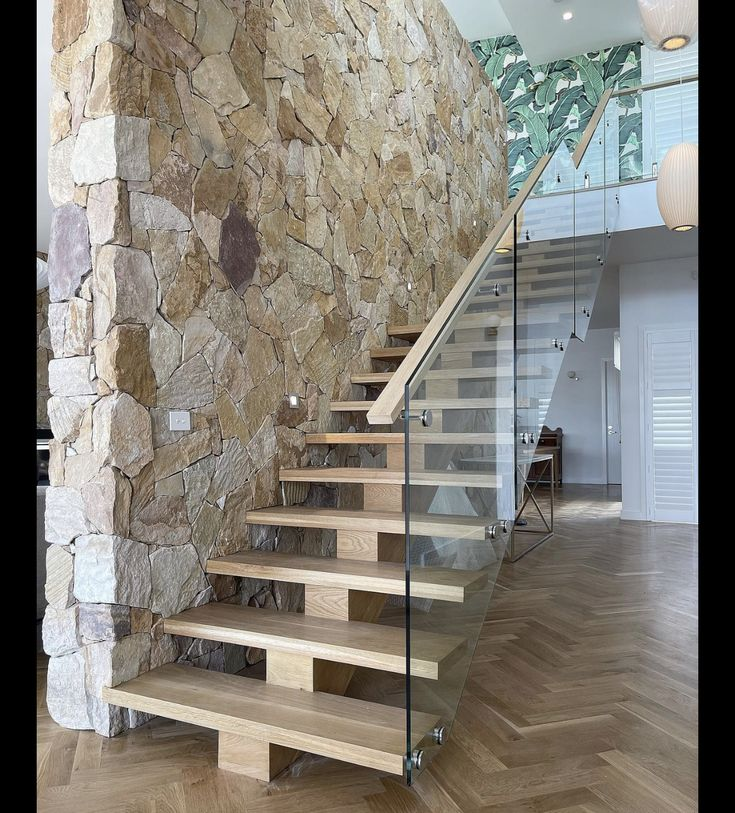
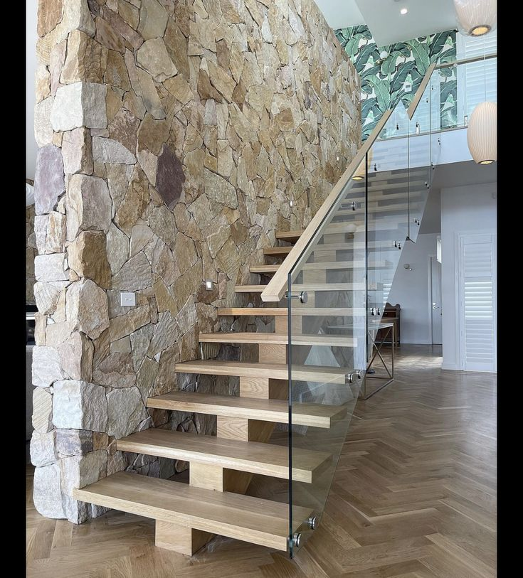
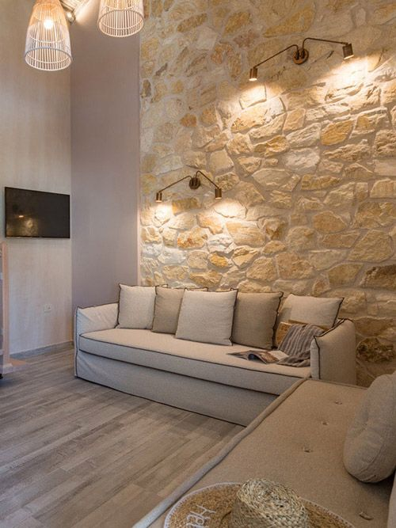
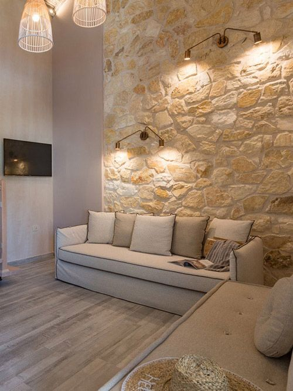
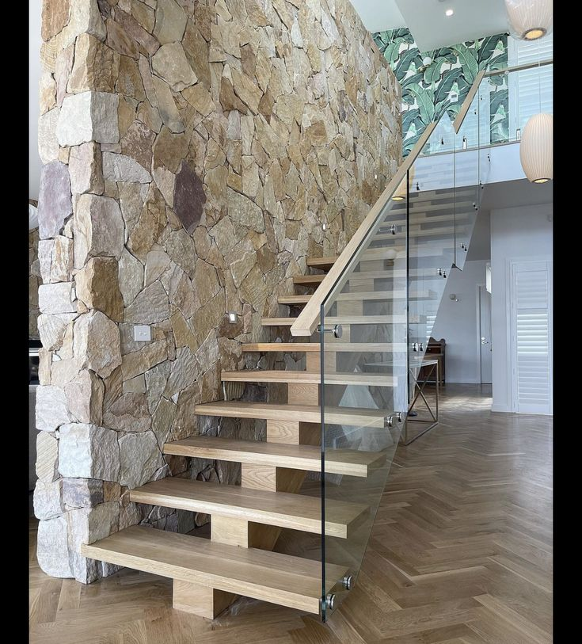
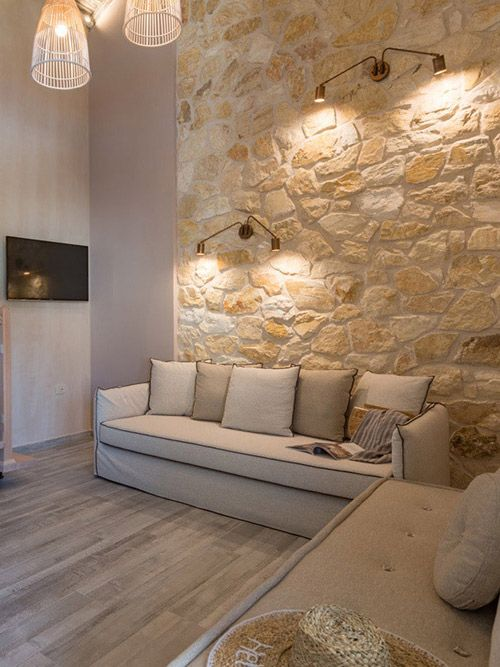

İç Mekan Taş Kaplama Uygulamaları | Bek Stones
İç mekanlarınıza doğal taş kaplama ile şıklık ve zarafet katın. Projelerimizden örnekleri aşağıdan inceleyebilirsiniz.


 

 



İç mekanlarınıza doğal taş kaplama ile şıklık ve zarafet katın. Projelerimizden örnekleri aşağıdan inceleyebilirsiniz.

